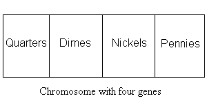

[JGAP Home]
Preface: Please note that this documentation could be correlated to a former JGAP version. Therefor we recommend having a look at the examples provided with JGAP and then read this document in order to get an idea.
To use JGAP in an application, there are five basic things that you must do:
Through the course of this tutorial, we'll build a simple example program that makes use of JGAP. The goal of our program will be to produce a user-specified amount of change in the fewest possible American coins (quarters, dimes, nickels, and pennies).
At the heart of the genetic algorithm is the Chromosome. The Chromosome represents a potential solution and is divided into multiple genes. Genes in JGAP represent distinct aspects of the solution as a whole, just as human genes represent distinct aspects of individual people, such as their sex or eye color. During the JGAP evolution process, chromosomes are exposed to multiple genetic operators that represent mating, mutation, etc. and then are chosen for the next generation during a natural selection phase based upon their "fitness," which is a measure of how optimal that solution is relative to other potential solutions. The entire goal of the genetic algorithm is to mimic the natural process of evolution in order to produce superior solutions.
Step 1, therefore, is to decide on the makeup of your chromosomes, which includes how many genes you want and what those genes will represent. In our sample program, we want to create a pile of change that contains the fewest possible American coins that total up to the amount specified by the user. Since a chromosome represents a potential solution, in our sample it will represent a pile of change. We'll setup our genes to represent the different denominations of coins so that we'll have a total of four genes per chromosome (one each for quarters, dimes, nickels, and pennies).

We'll actually write the code to setup our Chromosome objects in
step 3.JGAP is designed to do almost all of the evolutionary work for you in a relatively generic fashion. However, it has no knowledge of the specific problem you're actually trying to solve, and hence has no intrinsic way of deciding if one potential solution is any better than another potential solution for your specific problem. That's where the fitness function comes in: it's a single method that you must implement that accepts a potential problem solution and returns an integer value that indicates how good (or "fit") that solution is relative to other possible solutions. The higher the number, the better the solution. The lower the number (1 being the lowest legal fitness value), the poorer the solution. JGAP will use these fitness measurements to evolve the population of solutions toward a more optimal set of solutions.
Let's start with a fully-working example of a fitness function, the details of which will be explained below. Since the goal of our small program is to produce an amount of change in American coins equal to a target amount in the fewest possible number of coins, it seems reasonable that the measure of fitness for a particular solution would be a combination of the relative closeness of the amount of change it represented to the target amount of change, and the total number of coins represented by the solution (fewer being better).
package examples;
import org.jgap.Chromosome;
import org.jgap.FitnessFunction;
/**
* This class provides an implementation of the classic "Make change" problem
* using a genetic algorithm. The goal of the problem is to provide a
* specified amount of change (from a cash purchase) in the fewest coins
* possible. This example implementation uses American currency (quarters,
* dimes, nickels, and pennies).
*
* This example may be seen as somewhat significant because it demonstrates
* the use of a genetic algorithm in a less-than-optimal problem space.
* The genetic algorithm does best when there is a smooth slope of fitness
* over the problem space towards the optimum solution. This problem exhibits
* a more choppy space with more local optima. However, as can be seen from
* running this example, the genetic algorithm still will get the correct
* answer virtually everytime.
*/
public class MinimizingMakeChangeFitnessFunction extends FitnessFunction
{
private final int m_targetAmount;
/**
* Constructs this MinimizingMakeChangeFitnessFunction with the desired
* amount of change to make.
*
* @param a_targetAmount The desired amount of change, in cents. This
* value must be between 1 and 99 cents.
*/
public MinimizingMakeChangeFitnessFunction( int a_targetAmount )
{
if( a_targetAmount < 1 || a_targetAmount > 99 )
{
throw new IllegalArgumentException(
"Change amount must be between 1 and 99 cents." );
}
m_targetAmount = a_targetAmount;
}
/**
* Determine the fitness of the given Chromosome instance. The higher the
* return value, the more fit the instance. This method should always
* return the same fitness value for two equivalent Chromosome instances.
*
* @param a_subject: The Chromosome instance to evaluate.
*
* @return A positive integer reflecting the fitness rating of the given
* Chromosome.
*/
public double evaluate( IChromosome a_subject )
{
// The fitness value measures both how close the value is to the
// target amount supplied by the user and the total number of coins
// represented by the solution. We do this in two steps: first,
// we consider only the represented amount of change vs. the target
// amount of change and calculate higher fitness values for amounts
// closer to the target, and lower fitness values for amounts further
// away from the target. If the amount equals the target, then we go
// to step 2, which adjusts the fitness to a higher value for
// solutions representing fewer total coins, and lower fitness
// values for solutions representing a larger total number of coins.
// ------------------------------------------------------------------
int changeAmount = amountOfChange( a_subject );
int totalCoins = getTotalNumberOfCoins( a_subject );
int changeDifference = Math.abs( m_targetAmount - changeAmount );
// Step 1: Determine the distance of the amount represented by the
// solution from the target amount. Since we know the maximum amount
// of change is 99 cents, we'll subtract from that the difference
// between the solution amount and the target amount. That will give
// the desired effect of returning higher values for amounts close
// to the target amount and lower values for amounts further away
// from the target amount.
// ------------------------------------------------------------------
double fitness = ( 99 - changeDifference );
// Step 2: If the solution amount equals the target amount, then
// we add additional fitness points for solutions representing fewer
// total coins.
// -----------------------------------------------------------------
if( changeAmount == m_targetAmount )
{
fitness += 100 - ( 10 * totalCoins );
}
return fitness;
}
/**
* Calculates the total amount of change (in cents) represented by
* the given chromosome and returns that amount.
*
* @param a_potentialSolution The potential solution to evaluate.
* @return The total amount of change (in cents) represented by the
* given solution.
*/
public static int amountOfChange( IChromosome a_potentialSolution )
{
int numQuarters = getNumberOfCoinsAtGene( a_potentialSolution, 0 );
int numDimes = getNumberOfCoinsAtGene( a_potentialSolution, 1 );
int numNickels = getNumberOfCoinsAtGene( a_potentialSolution, 2 );
int numPennies = getNumberOfCoinsAtGene( a_potentialSolution, 3 );
return ( numQuarters * 25 ) + ( numDimes * 10 ) + ( numNickels * 5 ) +
numPennies;
}
/**
* Retrieves the number of coins represented by the given potential
* solution at the given gene position.
*
* @param a_potentialSolution The potential solution to evaluate.
* @param a_position The gene position to evaluate.
* @return the number of coins represented by the potential solution
* at the given gene position.
*/
public static int getNumberOfCoinsAtGene( IChromosome a_potentialSolution,
int a_position )
{
Integer numCoins =
(Integer) a_potentialSolution.getGene(a_position).getAllele();
return numCoins.intValue();
}
/**
* Returns the total number of coins represented by all of the genes in
* the given chromosome.
*
* @param a_potentialsolution The potential solution to evaluate.
* @return The total number of coins represented by the given Chromosome.
*/
public static int getTotalNumberOfCoins( IChromosome a_potentialsolution )
{
int totalCoins = 0;
int numberOfGenes = a_potentialsolution.size();
for( int i = 0; i < numberOfGenes; i++ )
{
totalCoins += getNumberOfCoinsAtGene( a_potentialsolution, i );
}
return totalCoins;
}
}
Let's tackle our example fitness function bit by bit. To start, we define our own class and extend the org.jgap.FitnessFunction class. All fitness functions must extend the FitnessFunction class. We then define a constructor and an evaluate() method. The evaluate() method is a standard method that all fitness functions must implement. That is the method that will be called by the genetic engine when it needs to know the fitness value of a chromosome.
Our constructor isn't very exciting: it merely accepts a target change amount that the user desires, verifies that the amount meets our constraint of being between 1 and 99 cents, and then stores the amount in an instance variable for later use.
The interesting part of the whole class is the evaluate() method, which is where the work is done. The evaluate method is always passed in a Chromosome, which represents a potential solution. A Chromosome is made up of genes, each of which represents a respective part of the solution. In our example, the Chromosome represents an amount of change, while the genes represent the specific kinds of coins: quarters for the first gene, dimes for the second gene, nickels for the third gene, and pennies for the fourth gene. The value of a gene is called an allele. In our example, the allele would be the number of a given type of coin (for example, 2 pennies).
The first thing the evaluate() method does is invoke a couple of helper methods which conveniently return the total amount of change that is represented by the potential solution and the total number of coins represented by the solution. We'll take a closer look at how these work later. It then subtracts the amount of change represented by the solution from the target amount, and takes the absolute value of the difference to measure how close the solution amount is to the target amount. We then set about calculating our fitness value.
As the comments indicate, we're going to calculate fitness in two stages. The first stage calculates an initial fitness value based on how far away the solution amount is from the target amount. Then, if the solution amount happens to equal the target amount, we go to stage two, which adjusts the fitness value based upon the total number of coins represented by the solution. In the end, we want to return high fitness values for solutions that match the target amount with very few coins, and return lower fitness values for solutions that are far away from the target amount or represent a large number of coins.
Moving beyond the evaluate() method, we encounter those helper methods we mentioned earlier. The amountOfChange() method calculates the total amount of change (in cents) represented by a Chromosome that is passed to it. Internally, it defers to the getNumberOfCoinsAtGene() method to actually extract the number of each type of coin. It then calculates the total amount of change and returns it.
The next convenience method, getNumberOfCoinsAtGene(), is responsible for determining the number of coins represented by a specific gene in the given Chromosome. As mentioned earlier, the value of each gene in the Chromosome is called an allele. This method gets the allele for the gene at the provided position in the Chromosome and then returns it as an int primitive.
Finally, there's a getTotalNumberOfCoins() method that determines the total number of coins represented by a given Chromosome. It simply tallies up the number of coins represented by each gene--using the getNumberOfCoinsAtGene() method--and then returns the tally.
And that's the end of the fitness function. If you're feeling a little bit overwhelmed, don't worry about it and take some comfort in the fact that it's all down hill from here! The fitness function is the hardest part of using JGAP and, after writing a few, you'll get the hang of it.
JGAP is designed to be very flexible and pluggable. If you want, you can create your own genetic operators, random number generators, natural selectors, and so on. To support all of this, JGAP uses a Configuration object that must be setup with all of the settings you want prior to using the genetic engine. Fortunately, we realize that most people will want to use the stock components, and so we include a DefaultConfiguration class that comes already setup with the most common settings. You just need to provide three extra pieces of information: what fitness function you want to use, how you want your Chromosomes to be setup, and how many Chromosomes you want in your population. Let's look at some sample code that you might want to include in the same class as the above snippets.
public static void main(String[] args) throws Exception { // Start with a DefaultConfiguration, which comes setup with the // most common settings. // ------------------------------------------------------------- Configuration conf = new DefaultConfiguration(); // Set the fitness function we want to use, which is our // MinimizingMakeChangeFitnessFunction that we created earlier. // We construct it with the target amount of change provided // by the user. // ------------------------------------------------------------ int targetAmount = Integer.parseInt(args[0]); FitnessFunction myFunc = new MinimizingMakeChangeFitnessFunction( targetAmount ); conf.setFitnessFunction( myFunc ); // Now we need to tell the Configuration object how we want our // Chromosomes to be setup. We do that by actually creating a // sample Chromosome and then setting it on the Configuration // object. As mentioned earlier, we want our Chromosomes to // each have four genes, one for each of the coin types. We // want the values of those genes to be integers, which represent // how many coins of that type we have. We therefore use the // IntegerGene class to represent each of the genes. That class // also lets us specify a lower and upper bound, which we set // to sensible values for each coin type. // -------------------------------------------------------------- Gene[] sampleGenes = new Gene[ 4 ]; sampleGenes[0] = new IntegerGene(conf, 0, 3 ); // Quarters sampleGenes[1] = new IntegerGene(conf, 0, 2 ); // Dimes sampleGenes[2] = new IntegerGene(conf, 0, 1 ); // Nickels sampleGenes[3] = new IntegerGene(conf, 0, 4 ); // Pennies Chromosome sampleChromosome = new Chromosome(conf, sampleGenes ); conf.setSampleChromosome( sampleChromosome ); // Finally, we need to tell the Configuration object how many // Chromosomes we want in our population. The more Chromosomes, // the larger the number of potential solutions (which is good // for finding the answer), but the longer it will take to evolve // the population each round. We'll set the population size to // 500 here. // -------------------------------------------------------------- conf.setPopulationSize( 500 ); // TODO: Add the code following below in this example here }
Hopefully most of the above code is pretty self-explanatory, with maybe the exception of setting up the sample Chromosome. Let's look at that bit in a little more detail.
As mentioned earlier, a Chromosome is made up of genes. JGAP lets you choose what Gene class to use to represent each gene in the Chromosome (for more information on creating custom Gene classes, please see the
Creating Custom Genes document). That provides the most flexibility and convenience. If we wanted to, we could have actually written a separate Gene class for each coin type in our example, such as a QuarterGene, DimeGene, NickelGene, and PennyGene. In fact, we look at what a QuarterGene might look like in the Creating Custom Genes document that we just mentioned.As it happens, we decided that the IntegerGene (which comes with JGAP) would suffice. You'll notice, however, that we did take advantage of the ability to specify different Gene implementations for each gene in the Chromosome by creating separate IntegerGenes with different lower and upper bounds for each coin type. We set the upper bounds to be the largest number of coins of that respective type that would appear in an optimal solution. Limiting the solution space this way helps JGAP arrive at better solutions with fewer evolutions.
So to get back to the code, we first create an array of Genes with a length of 4, since we want to represent 4 genes (one for each coin type). We then set each Gene in the array to an IntegerGene that is constructed with appropriate lower and upper bounds for that coin type. Finally, we construct a new Chromosome and pass it the array of Genes, and then set that sample Chromosome on the Configuration object.
The final part of this step is setting the population size, which is the number of Chromosomes we want in the population. A larger population size means more potential solutions to choose from and more genetic diversity, but it also means more work to evolve that population. Ultimately, you'll need to settle on a value that balances your need for a nice selection of potential solutions against how much time you're willing to spend waiting for your population to evolve. The population size is chosen higher than the number of possible solutions here (as 3*2*1*4 = 24). But as Genetic Algorithms is a stochastic system, the more tries the GA is allowed to make, the higher the chances finding a good solution. Besides, the population size should not be correlated too specifically to a narrowed search space, but be usable in a more generic way. Meaning: if the 24 possible combinations mentioned above was raised, then the population wouldn't need to be adapted. And if the 24 is kept, the population size of 500 will not have a negative impact, because fewer evolutions are needed finding a good solutions than with smaller population size.
Recall that each potential solution is represented by a Chromosome. A population of Chromosomes is called a Genotype, and that is the class we need to construct to create our population. If you want, you can construct each Chromosome individually and then pass them all into a new Genotype (much like we constructed each Gene and passed them into the sample Chromosome in step 3), but JGAP provides a much quicker and easier way of creating a random population. In fact, it only takes one line of code (append all following code lines to the above code in method main)
:Genotype population = Genotype.randomInitialGenotype( conf );
The randomInitialGenotype() method takes in a Configuration object (which we setup in step 3) and returns a Genotype with the correct number of Chromosomes, each of which has its genes set to random values. In other words, it generates a random population. For most applications, this is all that's necessary to create your initial population of potential solutions.
Now that we've gotten everything setup and ready to go, it's time to start evolving the population until it contains some potential solutions that we're satisfied with. Evolving the population one cycle is another one-liner:
population.evolve();
Typically, after each evolution cycle, you'll want to check if the population contains any satisfactory solutions. The easiest way to do this is to invoke the getFittestChromosome() method on the population:
IChromosome bestSolutionSoFar = population.getFittestChromosome();
If the best solution so far is good enough for you, then you're done. If not, then you can evolve the population again. Alternatively, you may just choose to evolve the population a set number of times and then see what the best solution is that was produced at the end (or a combination thereof). For our example problem, we'll take this latter approach.
IChromosome bestSolutionSoFar;
for( int i = 0; i < MAX_ALLOWED_EVOLUTIONS; i++ )
{
population.evolve();
}
System.out.println( "The best solution contained the following: " );
System.out.println(
MinimizingMakeChangeFitnessFunction.getNumberOfCoinsAtGene(
bestSolutionSoFar, 0 ) + " quarters." );
System.out.println(
MinimizingMakeChangeFitnessFunction.getNumberOfCoinsAtGene(
bestSolutionSoFar, 1 ) + " dimes." );
System.out.println(
MinimizingMakeChangeFitnessFunction.getNumberOfCoinsAtGene(
bestSolutionSoFar, 2 ) + " nickels." );
System.out.println(
MinimizingMakeChangeFitnessFunction.getNumberOfCoinsAtGene(
bestSolutionSoFar, 3 ) + " pennies." );
System.out.println( "For a total of " +
MinimizingMakeChangeFitnessFunction.amountOfChange(
bestSolutionSoFar ) + " cents in " +
MinimizingMakeChangeFitnessFunction.getTotalNumberOfCoins(
bestSolutionSoFar ) + " coins." );
Now we've got ourselves a full-fledged genetic application! To view all of the code for this example, see the MinimizingMakeChange.java and MinimizingMakeChangeFitnessFunction.java files in the examples/src directory of the JGAP distribution.
See the examples under package examples. They are located in subdirectory examples/src of the JGAP source distribution.
See the external blog entry from Jamie Craane or download a local copy of the article as PDF.
Copyright © 2002-2010
Klaus Meffert / Neil Rotstan. All rights reserved.[JGAP Home]